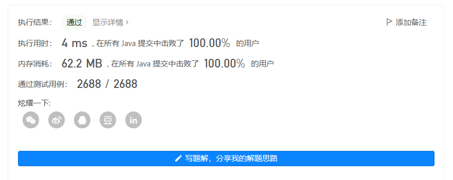

leetcode第348场周赛
348场周赛
AC三道题，自我感觉良好，但也掩饰不了我是个菜鸡。
几乎是三道模拟题。
1、最小化字符串长度
给你一个下标从 0 开始的字符串 s
，重复执行下述操作 任意 次：
- 在字符串中选出一个下标
i，并使c为字符串下标i处的字符。并在i左侧（如果有）和 右侧（如果有）各 删除 一个距离i最近 的字符c。
请你通过执行上述操作任意次，使 s 的长度
最小化 。
返回一个表示 最小化 字符串的长度的整数。
示例 1：
1 | 输入：s = "aaabc" |
示例 2：
1 | 输入：s = "cbbd" |
提示：
1 <= s.length <= 100s仅由小写英文字母组成
算法分析：
一开始，我分析题目的时候，直接理解歪来：我以为选择下标i之后，要往左侧或者右侧数i个单位，判断与该字符是否相同，相同就删除，好家伙直接浪费半小时思考。
初始代码是这样的：
1 | public int minimizedStringLength(String s) { |
用例通过2000多呢...我仔细一想，这题，不就是最小化字符串嘛，把重复字符都删掉，只留一个，就是最终的字符串。
那方法可就多了：我想到的是哈希集和哈希表。
哈希表
哈希表定义：采用长度为26的布尔值数组。（s
仅由小写英文字母组成）。
第一次遍历：将出现的字符在哈希表里都标记为true。
第二次遍历：统计哈希表里为true的元素个数，返回result。
代码：
1 | class Solution { |
2、半有序排列
给你一个下标从 0 开始、长度为 n
的整数排列 nums 。
如果排列的第一个数字等于 1 且最后一个数字等于
n ，则称其为 半有序排列
。你可以执行多次下述操作，直到将 nums 变成一个
半有序排列 ：
- 选择
nums中相邻的两个元素，然后交换它们。
返回使 nums 变成 半有序排列
所需的最小操作次数。
排列 是一个长度为 n
的整数序列，其中包含从 1 到 n
的每个数字恰好一次。
示例 1：
1 | 输入：nums = [2,1,4,3] |
示例 2：
1 | 输入：nums = [2,4,1,3] |
示例 3：
1 | 输入：nums = [1,3,4,2,5] |
提示：
2 <= nums.length == n <= 501 <= nums[i] <= 50nums是一个 排列
算法分析：
简单模拟一下即可。
本题自己动手画一画，很容易得出两种情况：
1在n左边：
例如：[2,1,4,3] 那么我们第一躺遍历找到1和n的下标i，j，然后由于每次只能交换俩元素，也就是说每次下标只能移动一个位置，那所以，最终需要交换的次数为：(i-0)+(n-1-j)
1在n右边：
例如：[4,2,1,3] 这就需要换3次。因为1只要在4的右边，就一定会一个一个交换到与4相邻，那么1与4相邻的时候，交换相对来说可以少一次。那结果就是情况一再减去1
代码：
1 | class Solution { |
3、查询后矩阵的和
给你一个整数 n 和一个下标从 0 开始的
二维数组 queries ，其中
queries[i] = [typei, indexi, vali] 。
一开始，给你一个下标从 0 开始的 n x n
矩阵，所有元素均为 0
。每一个查询，你需要执行以下操作之一：
- 如果
typei == 0，将第indexi行的元素全部修改为vali，覆盖任何之前的值。 - 如果
typei == 1，将第indexi列的元素全部修改为vali，覆盖任何之前的值。
请你执行完所有查询以后，返回矩阵中所有整数的和。
示例 1：

1 | 输入：n = 3, queries = [[0,0,1],[1,2,2],[0,2,3],[1,0,4]] |
算法分析：
顺序推导会有很多覆盖操作，那不如，我们反向推导。最后一步的操作一定是印死在矩阵中的。往前推的过程中，也要注意边界的大小，假如我最后一次操作了第三列的元素，那么我的前面的可操作区间就缩小成了三行两列了。（由代码中给定的row和col决定）
由于我们每次操作都是针对一行或者一列，那如果对某一行重复操作了几次，我们只需要加上最后一次修改的数即可，为防止重复加，我们还需布尔数组去记录一下哪一行或者哪一列被操作了。
1 | class Solution { |
测试分析：
